Model.replication is an optional server-side transmission policy. It changes what
a recipient receives, independently of the client's Prediction_Group. The
server still simulates and archives the complete World.


model.replication = net.Replication(World, Control, Event, SEATS){
id = GAME_VIEW_V1,
project = project_recipient,
valid = validate_received_replica,
event = project_recipient_event,
}project(frame, held, Recipient{seat, spectator}) returns (Replica{state, held}, ok). Remove absent members from active storage and clear their payload, presence
and lifetime fields according to the game's representation. The callback controls
which held inputs are public too; filtering only entity state can still reveal
hidden controls. A recipient has a validated seat or spectator status, never a
client-supplied visibility mask. Store team/visibility permissions in replayable
state if they affect historical decisions.
valid(replica, recipient) checks the received representation. It replaces the
complete-world state validator for incoming Welcome/snapshot values. The authority
continues using Model.state_valid for its initial world and archives. All controls
still pass control_valid. Authority-only schema fields in both state and held controls are zeroed through
the public replica codec before the server calls this validator, matching the client decoder.
A rejected projection sends no fallback full state and increments
Stats.rejected_replica_views; fix the authored policy rather than hiding the
failure. The affected client may stall/resync while no valid view is available.
event(frame, recipient, occurrence) returns (redacted_event, include). It sees
the exact complete authority frame at the event's tick, including when facts are
sent later. Omitted events never enter that recipient's fact packet. Included
occurrences retain their epoch/tick/source/key identities; account for those IDs
when deciding disclosure, and do not encode secrets in event IDs. Event owner
metadata is recomputed from the redacted payload. Other players' action verdicts
are omitted automatically; a player retains its own results and spectators receive
none. Empty fact ticks remain present so confirmation can advance normally.
Callbacks must be pure functions of their supplied values and fixed model policy. They do not query current scene nodes or mutable side services. Decisions describe the supplied frame/event tick; they do not retroactively revoke already transmitted knowledge, hide traffic timing, or prevent inference from intentionally public data. The framework validates the authored invariant, not arbitrary Odin information flow.
Prediction and presentation#
A player using a nonzero replication policy must also supply a nonzero prediction
group. The group's project now receives the filtered replica. Include every
mutable dependency required by the predicted step/action or use explicit timestamped
boundary values. A received view alone does not establish a closed simulation group.
Existing full-world clients keep their default behavior when replication is disabled.
Authority-only fields can be omitted from a predicting player's wire view when this explicit policy/group pair is present. The former blanket rejection remains for unscoped full-world prediction. Observers validate and present their received view without running player prediction.
client.authority_frame, client_observed and Godot's authority-state convenience
query mean the received replica on a filtered client. They are complete public
worlds only under the default policy. Their historical ticks remain meaningful,
but they cannot be used as complete migration/save archives. Client prediction is
a further projection of that received value.
Membership changes are ordinary value changes in the recipient's snapshot stream. The existing per-peer acknowledged baselines encode additions/removals and zeroed payloads. One peer's baseline is never reused for another peer. Dropped deltas, reconnect serials and authority epochs retain their existing validation boundaries.
Contracts and recovery#
A nonzero policy ID is included in live and archived contract hashes. It names the authored representation/semantics; code addresses are not hashed. Change it when changing the policy contract. Peers must use matching IDs. Zero plus nil callbacks preserves the original contract and behavior, including earlier saves. A partial policy configuration is invalid.
Authority archives retain complete state, held controls and action ledgers, and validate with the complete model. Restored authorities project fresh recipient views; a departing host is sanitized before seeding its client prediction. For Room, supply a model with the client prediction group even on the original host, because that same model can be used after a role change. Existing conversion APIs compute the target policy's contract and do not grant authority to the new bytes.
Gameplay protocol 7 and checkpoint layout 4 are unchanged. The opt-in policy stamp distinguishes the new capability without changing existing zero-policy contracts. Normal private-state backup recipient authorization remains required; interest filtering does not make a full checkpoint safe for untrusted recipients.
Current scope and evidence#
This implementation reuses the authority's fixed State carrier. It reduces repeated wire changes for omitted objects and filters event traffic, but does not reduce the carrier's in-memory size or infer sparse storage/dependency domains. Initial full snapshots retain their fixed schema size. Automatic spatial indexing, alternative replica types and multiple simulation groups remain separate work.
The fixture uses 32 changing objects, an 80-unit visibility radius, two predicting players and a fixed-center observer. Player roster/positions are intentionally public; object payloads outside the view and remote held controls are suppressed. The wire tap checks current hidden nonce sentinels in Welcome/full/delta/fact packets, while decoded views and historical facts are also validated. Six core checks cover movement across regions, reconnect, complete archive recovery, contract mismatch, invalid projection refusal and departing-host sanitization.
In its fixed 180-tick observer workload, the filtered stream uses 33,282 bytes versus 69,360 for the full public observer (about 52% less). This includes fixture protocol traffic; it is not a general game bandwidth or CPU claim. Real Godot/ENet peers pass under configured latency, jitter, unreliable loss and duplication. See the retained evidence.